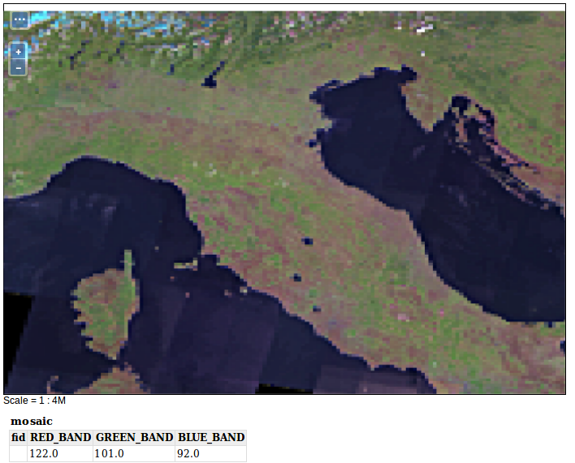
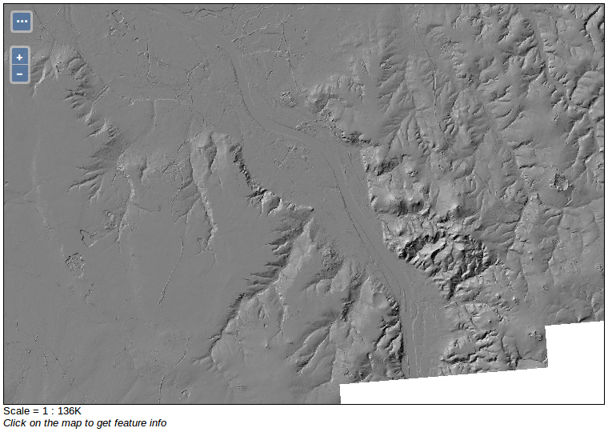

Rasterdatenquellen
GeoTIFF
Aufgabe:
Das GeoTIFF ist ein gängiges Rasterdaten-Format, da es sich aufgrund seiner verlustfreien Speicherung gut zur Verarbeitung von Geodaten eignet. Zusätzlich zum TIFF-Bildformat enthält das GeoTIFF Koordinaten zur Georeferenzierung und Informationen zur verwendeten Kartenprojektion.
Legen Sie einen neuen Datenspeicher an, über den ein GeoTIFF über den GeoServer veröffentlicht werden kann. Nutzen Sie hierfür
data/sf/sfdem.tiff.Veröffentlichen Sie dieses GeoTIFF über den GeoServer! Unter dem Reiter
Publishingund weiterWMS Settingslassen sich vorgefertigte Layer-Stile auswählen. Bei dem GeoTIFF handelt es sich um ein digitales Höhenmodell (DEM) aus South Dakota. Wählen Sie daher den Stildemfür diesen Layer.Öffnen Sie den neu angelegen Layer in der Layer-Vorschau!
ImageMosaic
Aufgabe:
Ein Datenspeicher der Art ImageMosaic bietet die Möglichkeit mehrere georeferenzierte Rasterdaten zu einem Mosaik zusammenzufügen. Somit können beispielsweise zwei oder mehr sich überlappende Satellitenaufnahmen als ein zusammenhängendes Raster veröffentlicht werden.
Legen Sie einen neuen Datenspeicher an, über den ein ImageMosaic über den GeoServer veröffentlicht werden kann. Nutzen Sie hierfür
coverages/mosaic_sample.Veröffentlichen Sie dieses Mosaik über den GeoServer!
Öffnen Sie den neu angelegen Layer in der Layer-Vorschau!

WMS
Aufgabe:
Das Kaskadieren eines externen WMS-Dienstes zu GeoServer kann in vielen Situationen äußerst nützlich sein, um diesen z.B. über integrierte GeoServer Methoden zu cachen (GeoWebCache, GWC).
Legen Sie einen neuen Datenspeicher an, über den ein bereits existierender WMS über den GeoServer kaskadiert veröffentlicht werden kann. Nutzen Sie hierfür z.B. den folgenden Dienst: https://www.wms.nrw.de/geobasis/wms_nw_dgm-schummerung
Veröffentlichen Sie einen Dienst Ihrer Wahl über den GeoServer!
Öffnen Sie den neu angelegen Layer in der Layer-Vorschau!
